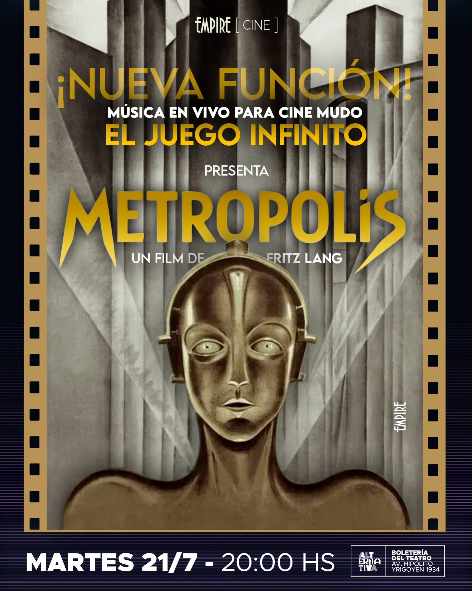
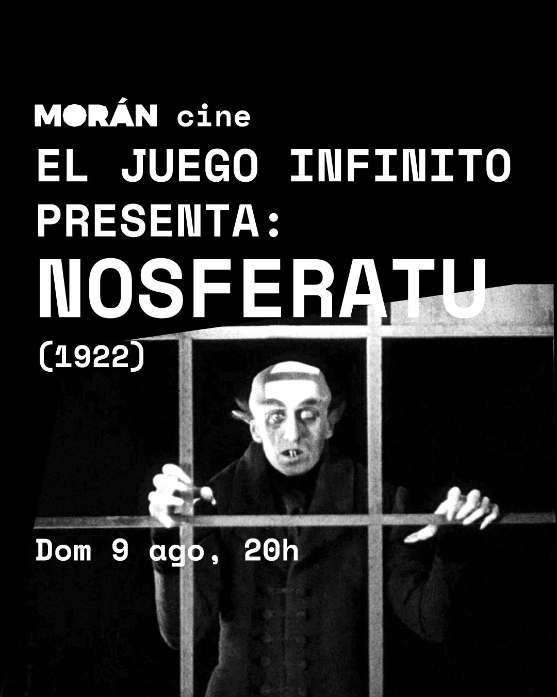

Próxima función
Metropolis
Teatro Empire · Yrigoyen 1934, CABA
Martes 21 de julio · 20 hs
📍 Ver en Google Maps

Conocé las próximas presentaciones de El Juego Infinito.
Teatro Empire · Yrigoyen 1934, CABA
Martes 21 de julio · 20 hs
📍 Ver en Google Maps

Cultural Morán · Pedro Morán 2147, CABA
Domingo 9 de agosto · 20 hs
